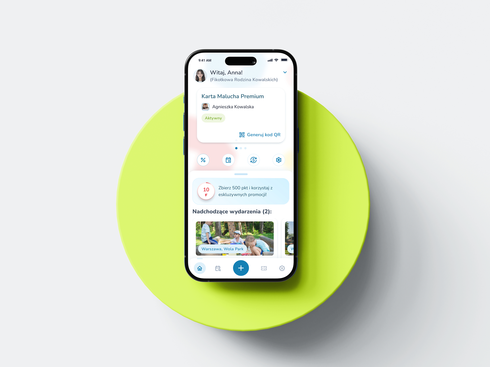
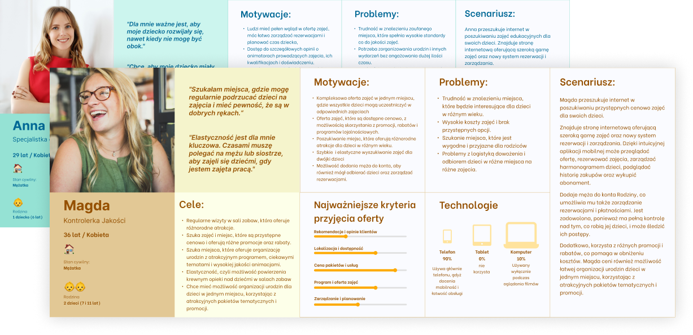
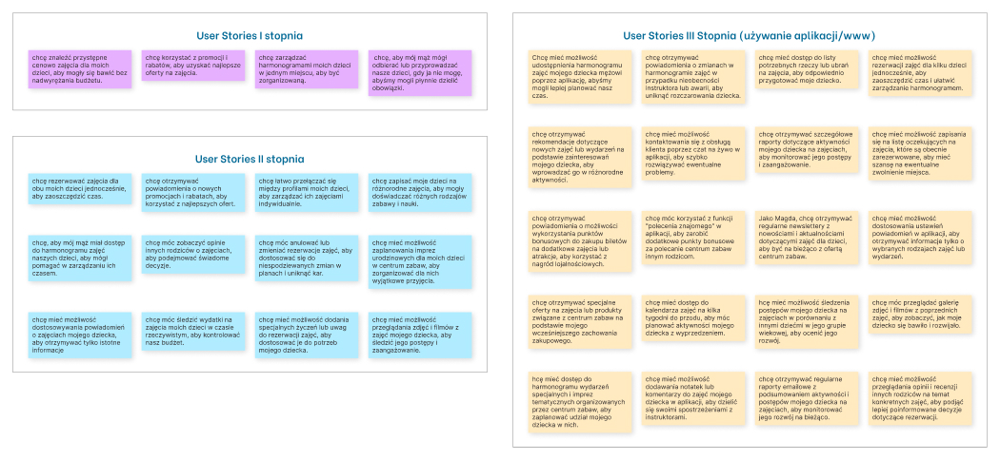

Four new business mechanics, and no app to run them on
Fikołki was changing how its play centres make money: QR gates at the entrance instead of a queue at the desk, three subscription tiers instead of single tickets, a family tree so one parent can hold every kid in one place, and points earned on entry and spent at the counter. Four mechanics, shipping together, and no app to carry any of them. I started from an empty canvas.
- 10.5k
- Subscriptions sold through the app.
- −47%
- Fewer enquiries to reception about organising a birthday party.
- +13%
- Event sales.

The model changed first. The product had to catch up.
The client came to us mid–pivot. Fikołki was moving its play centres off single tickets and onto subscriptions — three tiers — and taking the load off the front desk with QR gates you open by scanning a code from your phone. On top of that: a family tree, so one account holds every child, and points collected on site and spent on site. The decisions were already made. What was missing was the surface families would meet them on.
A 0–1 brief comes with no interface to fix and no analytics to argue with. This one came with something harder: a business model that existed in a spreadsheet and nowhere else. Gates were going in whether or not anyone had figured out how a parent holding one shoe and two coats gets a code on screen in time. That part was mine.
What the job actually covered.
Three phases, and everything that came out of each. No discovery sprint, no research budget — the inputs were the client’s document and the people who run the building. The list below is what I delivered, in the order it was delivered.
-
Phase 01
Research
- Desk Research
- Stakeholder Interviews
- Employee Interviews
- Protopersonas
- User Stories
-
Phase 02
UX Design
- User Flows
- User Journeys
- Wireframes
- Information Architecture
- Prototype
-
Phase 03
UI Design
- UI Kit
- Style Guide
- Interaction Design
Nobody was paying to talk to parents. So I went to the people who watch them every weekend.
There was no budget for user research and no product in the wild to measure. What I had was the client’s document describing each new revenue model end to end, desk research on what other play centres had already tried, and the two groups I could actually get in a room: stakeholders on one side, the staff working the door and the counter on the other. Out of that came protopersonas and user stories — protopersonas being the honest name for personas assembled from second-hand knowledge instead of from the people they describe.
Three things came out of it that shaped every screen after. All three are inferences — drawn from the model and from staff who watch the queue every Saturday, not from parents. I labelled them as assumptions in handover, because that is what they were.
-
A family is not a user
One adult pays, several children use it, and each child has a different card and a different expiry date. Model it as one person with one subscription and the product breaks on the second kid.
-
The gate is where the app gets judged
Whatever else the app does, the verdict gets passed by a parent holding a coat, a scooter and a toddler, trying to prove they’ve paid before the queue behind them notices.
-
Three tiers only work if you can tell them apart
Three subscriptions mean three sets of entitlements arriving at the same gate. If the app can’t say which one you hold and what it buys you, sorting that out lands back on the receptionist — and taking that load off the desk was half the point of the gates.

From protopersonas to something you can build
A protopersona on its own is a poster. To get anything buildable out of it, I wrote user stories for each one, split across three levels: what the parent wants out of the play centre at all, what they want out of the membership, and what they want out of the app and the website specifically.
Every story went on a card. Cards sort, and that was the point — the client could read them, argue with them and rank them without reading a document, and I could take the top of the pile straight into requirements.

Before the layout, I mapped a family.
One account holds several children. Each child holds a card, each card holds a tier and an expiry date, and each card unlocks a different set of entitlements at the door. Points sit on the account, not the card, and they buy things at the counter rather than at the gate. None of that is visible on screen, and all of it decides what the screen can say.
I drew that model first — profiles, cards, tiers, entitlements, points — and only then started on views. It's the reason the home screen can show one card and still be honest about the other two.
Out of the model came the information architecture: every screen the app would need and what sits under what. Drawing it whole, before any screen existed, is how you find out what is buried too deep.
![Information architecture for the Fikołki app, drawn as a flow diagram. On the right, onboarding: log in or register, pick a city, pick a home club, open a parent account or a child account, then a summary screen listing the data each one needs. In the centre, the home screen branching into My cards, My location, My account, Class schedule, Passes, My bookings, Party planning, Contact the club, FAQ and Log out. On the left, the account branch expanding into profile editing, payments and cards, the family tree with Add a fourth family member, invoices, consents, language, security and connected social accounts. Bottom right, Party planning opening into birthdays, tournaments and camps, company events, and schools and groups.](assets/fikolki/info-architecture.jpg)
Three decisions, and what each one cost.
Each one was a trade, and I’d make all three again.
The card is the home screen
WhyThe door is where the app either earns its place or doesn't. Opening it has to put a scannable code one tap away, before anything else loads.
The trade-offThe most valuable strip of screen goes to a thing most people use for four seconds a week. Everything else moves down.
One card at a time, with the others one swipe away
WhyShowing three children's cards at once turns a two-second action into a decision. Showing one and letting you swipe keeps it a reflex.
The trade-offThe second and third child are hidden behind a gesture, which needs a visible hint to survive first use.
Points name their reward, not their balance
Why„You have 340 points" means nothing. „90 more and the next entry is free" is a reason to come back on Saturday.
The trade-offThe copy has to be generated per account and per campaign, which is more work for whoever runs promotions.

What the decisions look like once they're a product.
Home
The home page gives a quick overview of each child’s subscription, showing active entries at a glance, with the QR code one tap from the card. Everything that isn’t the card — events, coupons, the rest of the offer — sits in a bottom sheet you pull up, so it’s one gesture away without competing with the thing a parent opens the app for at the door.
The points system gets the same treatment: not a balance, but progress toward the next reward, stated in the number of points still missing. It’s the one element on the screen whose job is to bring somebody back on Saturday.
![Three phone screens of the Fikołki app. Left: the home page greeting Anna, the Karta Malucha Premium card marked active with a Generate QR code button, shortcuts to promotions, schedule and settings, a points prompt reading „collect 500 points and use exclusive promotions”, and the start of an upcoming events list. Centre: the same screen with the bottom sheet pulled up, the events carousel now filling it. Right: the generated QR code, large and centred, under the card name and its expiry date, with a countdown of 00:29:39 and a Refresh QR code button.](assets/fikolki/screen-home.png)
Family tree
This is where „a family is not a user" stops being a research note and becomes a screen. One parent holds the whole account: add a family member, remove one, fix somebody’s details, change how the family works. A household isn’t fixed — a second child arrives, a grandmother starts doing the Tuesday pickup — so managing it had to be a place you go, not a setting you dig for.
Open any member and you get three tabs: their details, their bookings and their spendings. Grouping it per person rather than per account is the difference between „we spent a lot last month" and „this is what the older one’s swimming costs."
![Three phone screens of the family tree. Left: My families, listing the Kowalski family and its members with their roles — Agnieszka the child, Jan the dad, Renata and Milena the grandmothers — with an Add family member button at the bottom. Centre: one member’s view with tabs for Details, Bookings and Spending; the Details tab holds a photo with options to add one from the gallery or take one, fields for first name, surname and date of birth, and links to add a phone number and an e-mail. A delete icon sits in the top corner. Right: family settings with two toggles — linking the account with the second parent, on, and permission to collect a child, off.](assets/fikolki/screen-family-tree.png)
Event search
Fikołki keeps opening venues — several in Warsaw alone — so search had to be built for a list that grows, not for the handful of centres that existed when we started. It defaults to the family’s home location and lets you change it in one tap, because the honest guess about where a parent is looking is „the same place as last time."
The child gets picked at the start, not at checkout. Every event has an age bracket, so choosing the child first means the results are already the ones they can attend — no filling in a booking and finding out at the end that your five-year-old is two years short.
![Three phone screens of event search. Left: the search form with city, venue and date range, a „Who for?” section where two children are ticked, an activity filter, and a confirm button that already carries the result count — 16 results. Centre: the results list, 18 results, each a card with a photo, the venue as a tag, the event name, date, price, and a badge counting places left, 2 of 7 in red and 12 of 16 in green. Right: one event, FikoLaborki, with its price, and a row of facts — date, time, age range 5 to 8, duration 120 minutes — above tabs for description and gallery and a Book button.](assets/fikolki/screen-event-search.png)
My reservations
One place for everything booked, split into active, past and cancelled, and filterable by child — because a parent with two kids in different classes is managing two schedules, not one list.
Cancelling happens in the app. That one change is the whole point of the screen: it used to mean ringing the centre, which cost the parent a phone call and the front desk a job. Spending is on the same screen for the same reason — events and subscriptions in one view, so the question „what are we actually paying for here" has an answer that doesn’t involve asking anyone.
![Three phone screens of the bookings area. Left: My reservations with tabs for active, past and cancelled, chips filtering by child, a row of subscription cards each with a Generate QR code link, and the start of an upcoming bookings list. Centre: one booking, Agnieszka’s birthday, marked active, with three actions side by side — QR code, change, cancel — above the date, time, location and participant count. Right: a finished event marked completed, with tabs for description, gallery and rating; the gallery holds photos taken during the event.](assets/fikolki/screen-reservations.png)
Birthday booking
The old flow was fewer, denser screens — which sounds efficient until you watch somebody abandon one. We cut the number of steps and broke the heavy screens into smaller ones, so the path is shorter overall and no single screen asks for everything at once.
It opens by asking what matters to you: the location, the date, or the kind of party. Booking a birthday is a negotiation between those three and you can rarely have all of them, so the flow asks which one you won’t move on and sorts the results around it. At the end, once the price is on screen and the parent can see what a party costs, the app makes the case for a subscription — the one moment in the product where that argument is made of arithmetic rather than marketing.
![Three phone screens of the birthday wizard. Left: „What matters to you?” with three options — location, type of party, date — two of them ticked, and a Next button. Centre: results on a map of Warsaw with venue pins, a bottom sheet listing 18 results as cards carrying the venue, date, party types and the hours still free. Right: the booking summary with the party type, the child, the location, the date, a total of 949.50 PLN and a Pay button, with a prompt above it offering more benefits at a better price if the parent upgrades their subscription.](assets/fikolki/screen-birthday.png)
Subscriptions
The offer was a long list of passes with overlapping rules, which is a pricing table, not a product. We grouped them into named packages — Silver, Gold, Premium — each one stating its age range, how many workshops it includes and what entry it buys, so two tiers can be compared by reading rather than by deduction. Contract type comes after the package, as a second, smaller choice: open-ended with notice, or annual.
The one I pushed back on. Marketing consent lowered the price of the package, and the client asked for the box to arrive pre-ticked. That is a dark pattern, and under Polish and EU law it isn’t one you can argue about — consent has to be voluntary, specific, informed and unambiguous, and a box somebody didn’t tick is none of those. It would also have cost the brand far more when a parent noticed than the discount ever earned it. So I proposed the opposite: the box starts empty, the discount it unlocks is stated in money next to it, the terms are one tap away, and the consent for marketing is separated from the consent required to start the service early. The client took it. It cost a few percent of conversion on paper and removed the only genuine liability in the flow.
![Three phone screens of the subscription purchase. Left: club cards in a carousel — Silver marked as the most frequently bought — with a price from 89 zł a month, the child’s age range, the number of workshops included, unlimited entry, and a green panel offering 30 zł off a month for activating marketing consent. Centre: the two contract plans for the chosen card, FLEX open-ended with notice and an annual plan showing a crossed-out 1068 zł next to 979 zł. Right: the consent step, where the marketing consent box is empty and unticked, with its terms link beside it, separated from the ticked consent to begin the service before the fourteen-day withdrawal period ends.](assets/fikolki/screen-subscriptions.png)
The subscriptions sold, and the front desk stopped being the place you ask about birthdays.
Subscriptions sold through the app — the model the whole pivot was built on.
Fewer enquiries to reception about organising a birthday party. The information moved into the app, so the question stopped reaching the desk.
Event sales — bookings people used to make by asking at the counter, now made from the home screen.
What I'd do differently. I'd have pushed the client harder on a round of plain usability testing once the wireframes were done. Not a research programme — four tasks, the four that carry the business: buy a subscription, buy a pass, get through the QR gate, book a birthday party. A handful of parents, an afternoon. We skipped it because there was no budget line for it and the wireframes read fine to everyone in the room. The flaws surfaced anyway, just after launch, and got fixed then — at the price fixing things costs once they're live. Same corrections, worse moment, and I was the person in the room whose job it was to say so.

Tell me what's tangled. I'll tell you where I'd start.
Two sentences about the problem is enough. You get a straight answer back: what I would do, and in what order.
Prefer another channel? I'm on LinkedIn and I answer just as fast there.